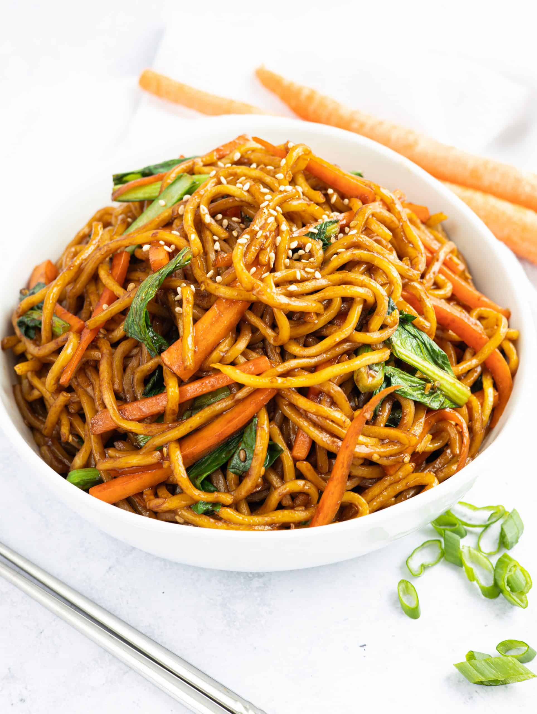

Asian style noodles

Description
Asian style noodles is a good weeknight dish when you are just hungry and want something quick and easy, ready in less than 30 minutes and without the fuss
of thousands of utensils used
Ingredients
- Lemon Ginger Dressing
- Dried noodles
- Fresh mushrooms of your choice
- Butter
- Minced herbs, depending on choice and availability
Steps
- Make the dressing:
Combine all ingredients, except for the sesame oil and olive oil in a food processor or hand blender.
Run the blender for a few seconds, until all ingredients are combined.
With the machine running, drizzle in the oils.
-
Cook the noodles:
In a pot, cook the dried noodles according to the package instructions. Drain and set aside.
-
Sauté the mushrooms:
Heat a frying pan over high heat. Add the butter and when the butter starts bubbling, add the mushrooms.
Sauté the mushrooms for 2 minutes.
-
Combine noodles and mushrooms, add dressing to taste:
In a large bowl, toss the cooked noodles with the mushrooms, fresh herbs, sesame seeds and some of the dressing (to taste.)